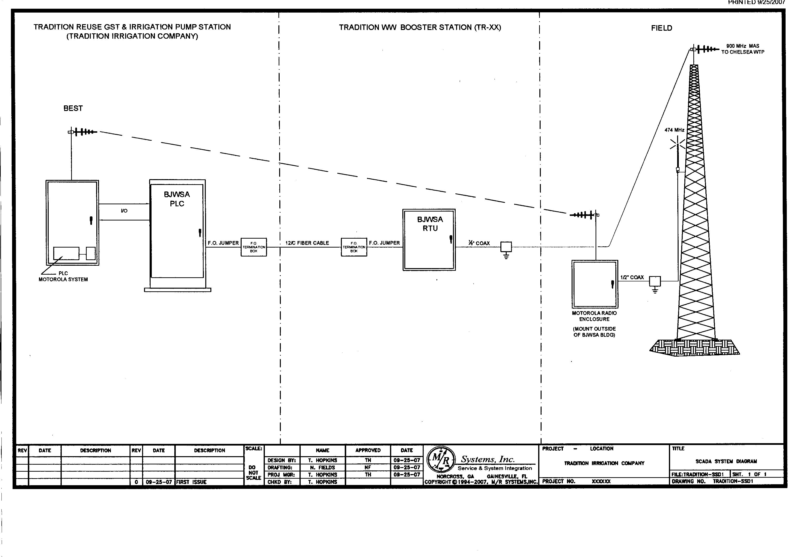
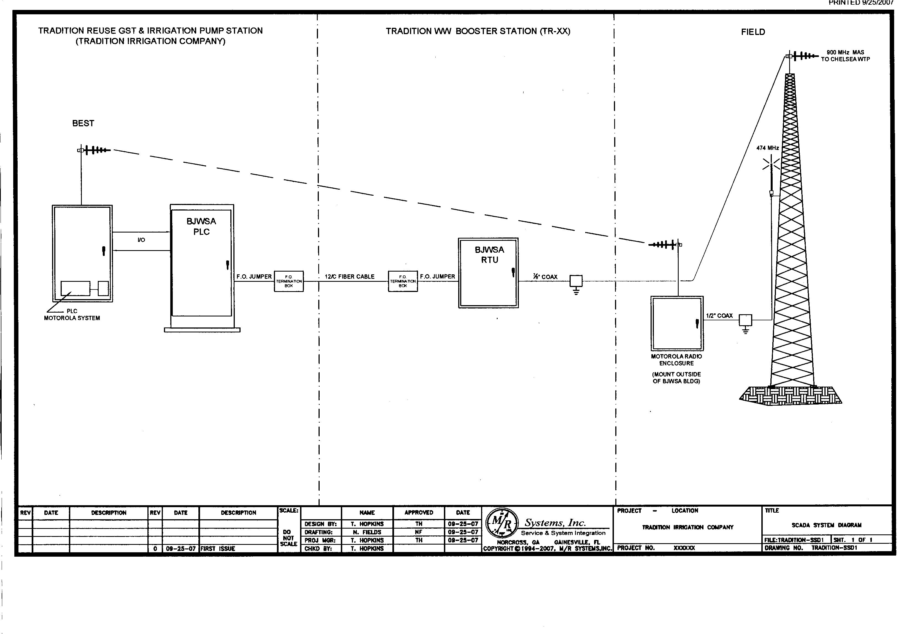
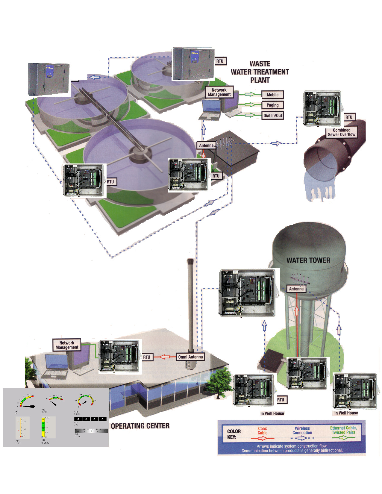
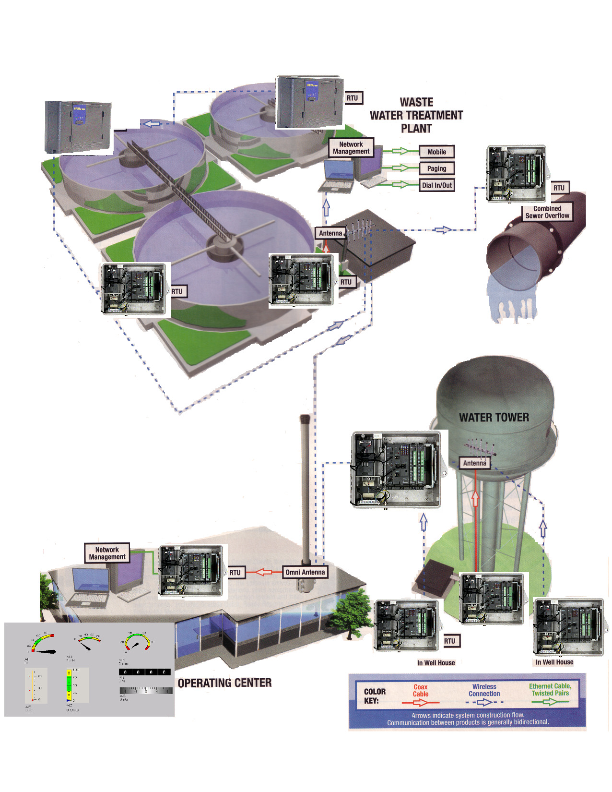
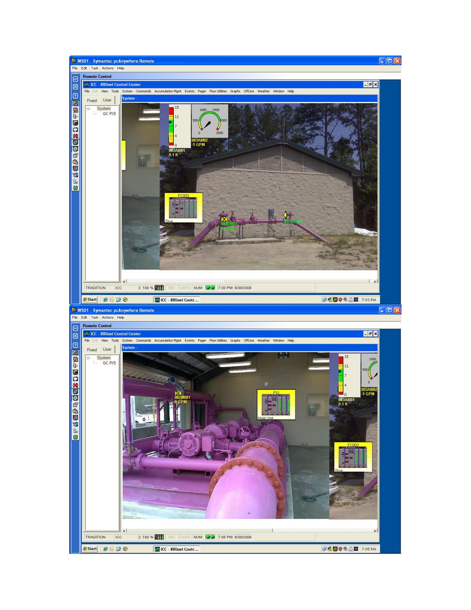
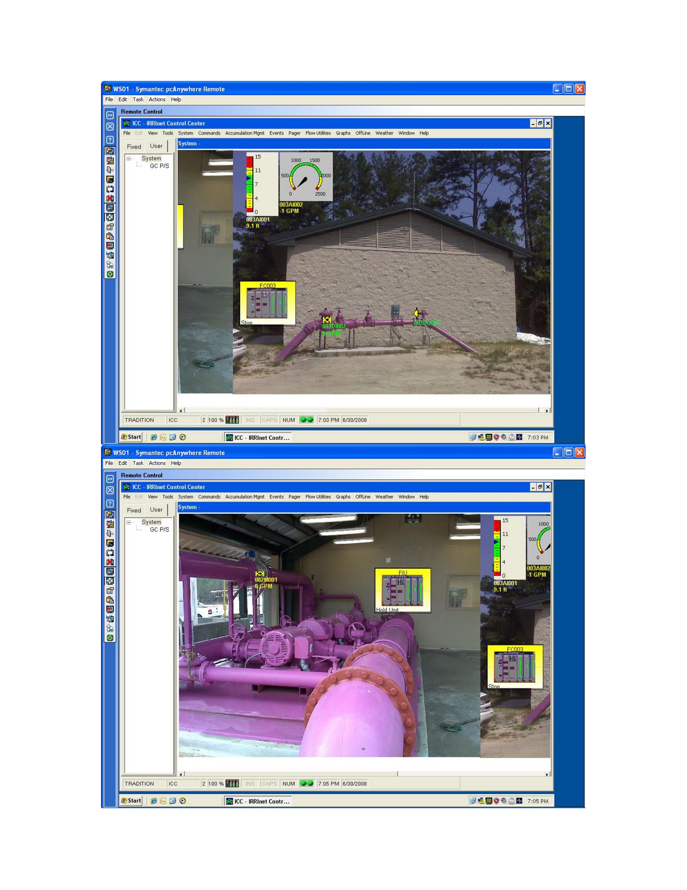
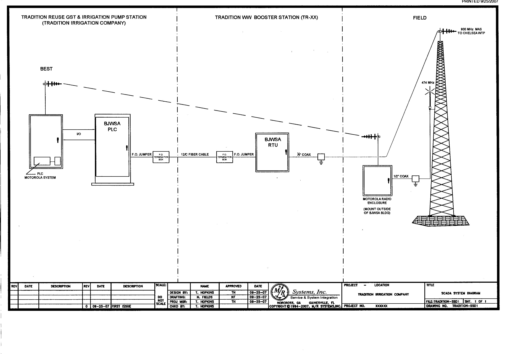
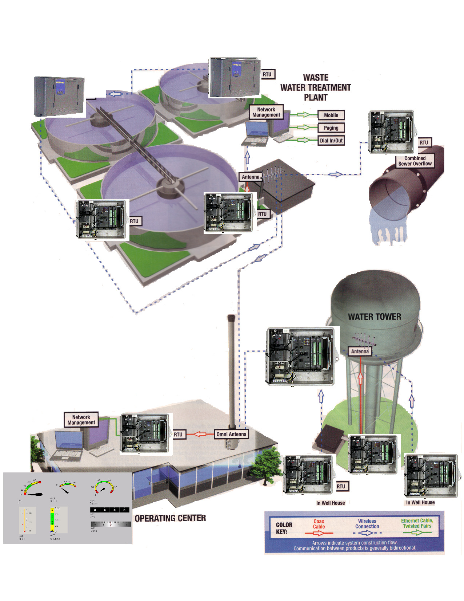
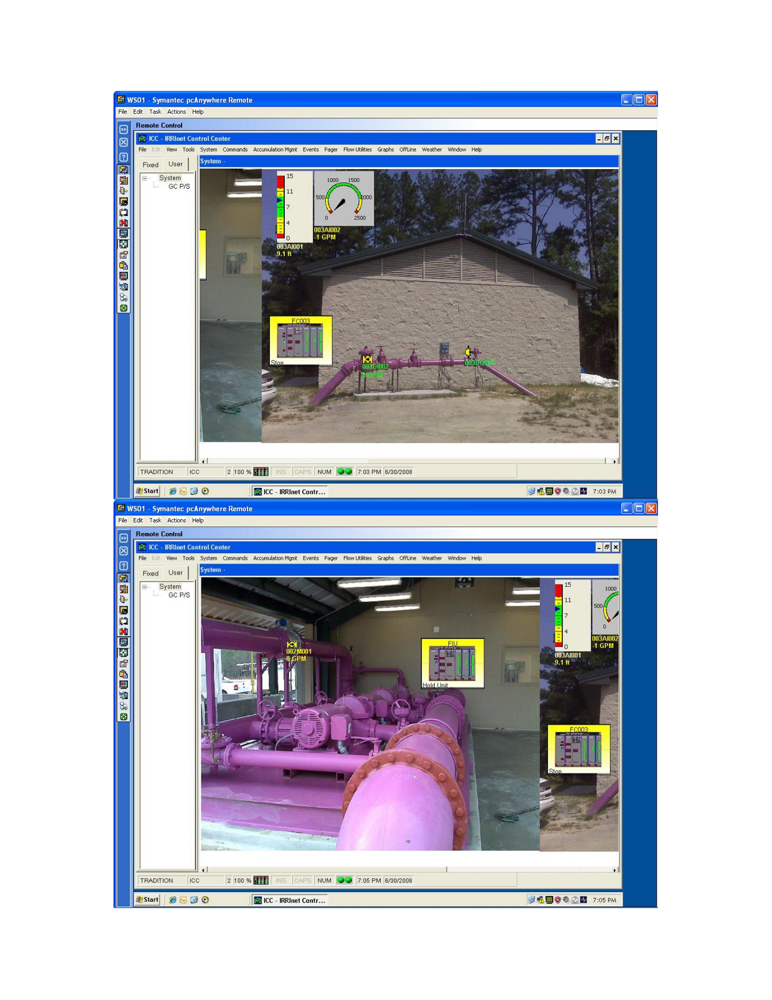

Photos


 

 

 

This is the website of Contemporary Controls & Communication, Inc.



Contemporary Controls & Communications, Inc. Is one of the only certified Motorola irrigation reseller and service provider in the eastern United States. As a authorized distributor and VAR we only sell and support Motorola equipment.
Contemporary Controls has a long history of irrigation management and installing control systems. Over the last 20 years Dan Holman (president) has provided sales and service of the Motorola irrigation products, which are capable of managing irrigating systems via radio control.
We support both the agricultural and municipal applications as well as Turf & Golf Course control systems.
We can supply any controller from the basic standalone to a county wide radio control system doing so within the customer's budget.
Our primary territory is the eastern sea board and the Caribbean. But over the years we have given support to the industry throughout North America.
Our purpose is not only to sell irrigation controllers, but to support the customer in managing our water resources.
We can provide a full spectrum of service and support of your system, from radio surveys to forecasting along with writing irrigation program applications and online services.